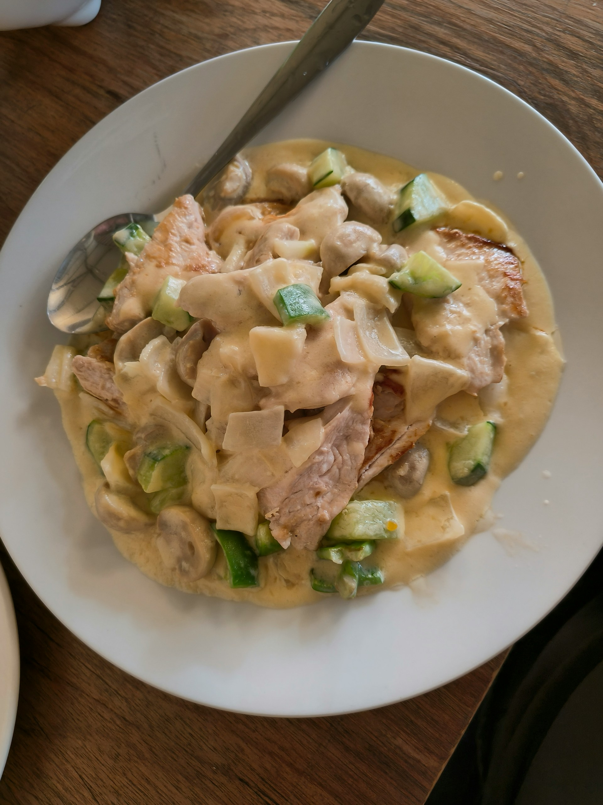

Home
Creamy Dijon Mustard Chicken

Creamy Dijon Mustard Chicken
Ingredients
- 1 pounds boneless skinless chicken breasts
- Salt
- 2 tablespoons extra virgin olive oil, plus more for lightly coating chicken
- 1 tablespoon butter
- 1 cup sliced shallots
- Half cup dry white wine (can substitute chicken stock)
- Half cup water
- 4 tablespoons Dijon mustard, smooth, whole grain, or a mixture of both
- 1 teaspoon dried thyme
- Quarter cup heavy cream
Steps
- Cut chicken breasts and pound thin
- Lightly brown the chicken cutlets, then remove from pan
- Cook the shallots
- Add white wine, water,mustard and thyme to make the sauce
- Add chicken back in on low heat
- Remove from heat and drizzle in the cream
- Season to taste